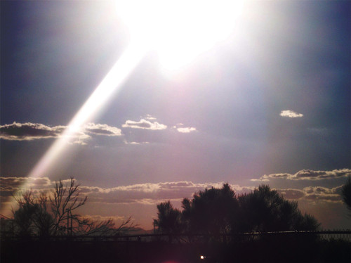
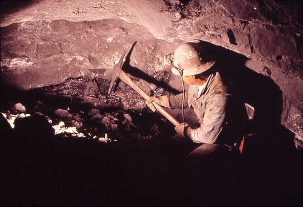
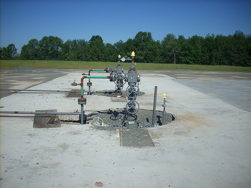
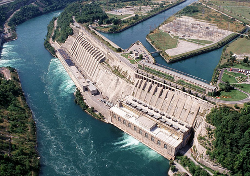

Hierdie hoofstuk bou op die energiekonsepte wat in Graad 4 en 5 aangeraak is. Ons brei die idee van hernubare en nie-hernubare energiebronne uit deur die verskillende tipes te ondersoek en te klassifiseer. Hierdie hoofstuk stel ook die idee van fossielbrandstowwe bekend, wat verband hou met wat leerders volgende termyn in Planeet
Aarde en die Ruimte sal bestudeer.
'n Interessante artikel oor hoe om leerders aan te moedig om WTIW loopbane te volg: bit.ly/19Bpoip
1. Hernubare en nie-hernubare bronne (3 ure)
Take
Vaardighede
Aanbeveling
Aktiwiteit: Klassifiseer bronne van energie
Identifisering, klassifikasie, verduideliking
Voorgestel deur KABV
Aktiwiteit: Kernbrandstowwe - debat
Navorsing, lees, evaluering, skryf, bespreking
Voorgestel
Gevallestudie: Biobrandstowwe
Lees, beantwoording, redeneer
Voorgestel
Aktiwiteit: Wat is die voordele en nadele?
Dink, bespreking, redeneer, skryf
Voorgestel deur KABV
Waarom benodig ons energie?
Wat bedoel ons met hernubare en nie-hernubare energiebronne?
Hoekom moet ons nie-hernubare enegiebronne gebruik?
Wat is fossielbrandstowwe?
Hernubare en nie-hernubare energie
Die konsep van hernubare teenoor nie-hernubare energiebronne is in Graad 6 bekendgestel. Herinner die leerders aan die betekenisse van die terme en gebruik dan die aktiwiteit om vas te stel hoeveel hulle vanaf Graad 6 onthou. Dit sal 'n aanduiding gee van hoe goed hulle die werk onthou. As hulle nie die vrae kan beantwoord nie sal dit nodig wees om meer tyd aan hersiening af te staan.
reservoir
bestendig
hernubare
nie-hernubare
kern
hidrokrag
waterstof
biobrandstof
metaan
fossielbrandstof
kweekhuisgasse
Alle lewende dinge benodig energie. Ons het in Lewe en Lewende Dinge geleer dat energie een van die vereistes vir lewe is. Dit is egter nie net lewende dinge wat energie benodig om te beweeg en verskillende prosesse uit te voer nie. Die masjiene en toestelle in die wêreld rondom ons het ook energie nodig om werk te doen. Waar kom hierdie energie vandaan?
Baie stowwe en organismes stoor energie wat dan gebruik kan word. Ons noem hulle energiebronne. Energiebronne het energie wat in hulle gestoor is en gebruik kan word om iets te laat gebeur, byvoorbeeld energie wat in petrol gestoor is kan gebruik word om 'n motor te laat ry. In Graad 6 het jy geleer van die twee hoofbronne van energie: hernubare en nie-hernubare bronne. Onthou jy wat hierdie terme beteken?
Hernubare bronne is dié wat herwin of hergebruik kan word. Nie-hernubare bronne kan nie hergebruik word nie. Daar is dus 'n beperkte hoeveelheid beskikbaar en wanneer dit opraak sal daar niks oor wees nie. Kom ons doen 'n vinnige hersiening om te sien hoeveel jy van Graad 6 kan onthou.
Klassifiseer energiebronne
INSTRUKSIES:
Bestudeer die volgende foto's wat verskillende energiebronne wys.
Gebruik die afbeeldings om die vrae wat volg te beantwoord.
Natuurlike gas - Gas brand op 'n stoofplaat.Olie - 'n Olieboor boor in die oseaanbodem in om die olieafsettings te bereik.Sonlig - Die Son is 'n bron van energie.Hout.Steenkool - 'n Steenkoolmyn.Wind - Die wind draai hierdie windpomp.Uraan - Uraan word ondergronds gemyn.
Uraan is 'n bron van energie vir kernkragstasies.
VRAE:
Teken 'n tabel in die volgende spasie om die energiebronne in die prentjies as óf hernubaar óf nie-hernubaar te klassifiseer. Voorsien jou tabel van 'n opskrif.
Verskillende hernubare en nie-hernubare energiebronne
Hernubare energiebronne
Nie-hernubare energiebronne
wind
sonlig
hout
steenkool
olie
aardgas
uraan
NOTA:
Leerders mag dit verwarrend vind dat hout 'n hernubare energiebron is. Verduidelik aan hulle dat dit hernubaar is in terme van die tyd wat dit neem om meer bome te groei om hierdie brandstof te genereer. Die tyd benodig om hierdie bron te hernu is kort in vergelyking met nie-hernubare bronne - dit neem byvoorbeeld miljoene jare vir fossielbrandstowwe om te vorm. Sommige leerders mag ook 'ontbossing' verwar met die volhoubare gebruik van hout vir kook en verhitting.
Wat bedoel ons wanneer ons sê dat iets hernubaar of nie-hernubaar is? Verduidelik dit in jou eie woorde.
Hernubare energiebronne kan weer gebruik word, of herwin of vervang word. Daar is 'n onbeperkte aanbod van hierdie energiebron. Nie-hernubare energiebronne kan nie weer gebruik of herwin word nie. Daar is 'n beperkte aanbod van hierdie energiebron.
Hoekom dink jy gebruik ons meestal nie-hernubare energiebronne?
Nie-herwinbare energiebronne het gewoonlik 'n groot hoeveelheid energie in hulle gestoor en hierdie energie is makliker om te benut as dié van herwinbare bronne.
Kom ons kyk nou van naderby na sommige van die algemeenste bronne van energie.
Nie-herwinbare bronne
Suid-Afrika gebruik 'n verskeidenheid energiebronne vir die opwekking van elektrisiteit. Die meeste van Suid-Afrika se kragstasies is steenkool-kragstasies. Ons het een kernkragstasie - Koeberg naby Kaapstad. Die Suid-Afrikaanse regering moedig die ontwikkeling van alternatiewe energiebronne aan, maar het nie op die oomblik enige wat aan die hoof elektrisiteitsnetwerk gekoppel is nie.
In die 4de termyn sal ons onder die afdeling 'Gestoorde sonenergie' kyk na hoe fossielbrandstowwe gevorm word. Hierdie is 'n inleiding tot die verskillende bronne waarna later terugverwys kan word.
Die nie-hernubare energiebronne wat vandag die algemeenste in ons wêreld gebruik word is fossielbrandstowwe. Fossielbrandstowwe is olie, steenkool en aardgas. Waarom dink jy word hulle fossiel genoem?
Steenkool, olie en gas word fossielbrandstowwe genoem omdat hulle oor miljoene jare gevorm is van die oorblyfsels van prehistoriese plante en diere (fossiele) .
Fossielbrandstowwe
Waar sien ons meestal fossielbrandstowwe in ons alledaagse lewens? Kyk na die volgende prente vir 'n leidraad.
Petrol word by 'n vulstasie in 'n motor gegooi. Petrol word uit ru-olie verkry.Steenkool word in meeste van Suid-Afrika se kragstasies gebruik.
Petrol en diesel word meestal gebruik as brandstof vir motors, vragmotors en motorfietse. Hulle word uit ru-olie vervaardig, wat 'n fossielbrandstof is wat vanuit die oorblyfsels van dooie prehistoriese diere gevorm word. Ru-olie bevat baie energie wat gebruik kan word. Ru-olie is 'n nie-hernubare energiebron omdat dit miljoene jare neem om ru-olie te vorm en dus kan ons nie meer ontgin wanneer die bestaande reserwes opgebruik is nie.
Steenkool is die algemeenste energiebron wat deur kragstasies gebruik word om elektrisiteit op te wek. Ons sal later in die termyn meer hieroor leer. Steenkool kan ook in vure verbrand word om warm te bly of in steenkoolaangedrewe stowe om kos te kook.
(Steen)kool kom vanaf die ou Engelse 13de eeuse woord col, wat 'n 'mineraal wat bestaan uit gefossiliseerde koolstof' beteken.
Aardgas is die algemene naam wat gebruik word om 'n mengsel van gasse te beskryf. Aardgas kom in diep ondergrondse rotsformasies voor, gewoonlik saam met ander fossielbrandstowwe soos olie en steenkool. Die grootste deel van die gasmengsel is 'n gas wat metaan genoem word. Metaan is 'n gas wat maklik brand en baie energie vrystel as dit verbrand word. Aardgas word gebruik vir kook, verhitting en die opwek van elektrisiteit.
Aardgas moet in ondergrondse reservoirs bereik word deur skagte soos hierdie te boor.
Wanneer ons oor die metaankomponent van aardgas praat, praat ons van 'n nie-hernubare bron. Gas het oor duisende jare gevorm soos organiese materiaal ontbind het en in rotsformasies vasgevang geraak waar ons dit nou ontgin. Soos ons later sal sien kan metaan egter ook beskou word as 'n hernubare bron. Dit geld wanneer metaan vanaf ontbindende organiese materiaal, soos diereafval, met behulp van mikro-organismes vervaardig word.
Nie-hernubare energiebronne speel 'n groot rol in ons lewens en die manier waarop ons wêreld vandag werk. Daar is egter ernstige bedenkinge oor ons afhanklikheid van nie-hernubare energiebronne. Eerstens is daar slegs 'n beperkte hoeveelheid beskikbaar en dus sal hierdie energiebronne eendag opraak. Ons sal dan alternatiewe energiebronne moet vind. Alternatiewe energiebronne word op die oomblik ondersoek en op klein skaal op sommige plekke gebruik.
Nog 'n groot nadeel van die brand van fossielbrandstowwe is dat dit kweekhuisgasse in ons atmosfeer vrystel. Kweekhuisgasse is teenwoordig in ons atmosfeer en help om die Aarde se temperatuur te beheer. Die Son se straling kom die Aarde se atmosfeer binne. 'n Gedeelte van die straling word deur die atmosfeer en die Aarde se oppervlak weerkaats. Die meeste van die sonstraling word egter deur die Aarde se oppervlak geabsorbeer en na hitte omgesit wat die Aarde verwarm. Die Aarde se oppervlak gee warmte af. Van die warmte onstnap in die ruimte in, maar die meeste word deur die kweekhuisgasse geabsorbeer en heruitgestraal om die atmosfeer en die Aarde se oppervlak verder te verwarm. Hierdie natuurlike proses word die kweekhuis-effek genoem.
Weet jy wat 'n kweekhuis is? Dit is gewoonlik 'n huis wat van glas is, waarin plante gekweek word. Die glas vang die Son se energie vas en hou die omgewing binne die kweekhuis warm genoeg vir die plante om in te groei. Die effek van sekere gasse in die atmosfeer is soortgelyk.
'n Kweekhuis van glas gemaak vang die Son se energie vas en verskaf 'n warm omgewing vir die plante, net soos wat die kweekhuisgasse in ons atmosfeer doen.
Ons gebruik van fossielbrandstowwe het egter selfs meer kweekhuisgasse, soos koolstofdioksied, vrygestel. Daar is nou 'n oormaat van kweekhuisgasse in die atmosfeer. Dit verminder die hoeveelheid warmte wat in die Ruimte in ontsnap en vang meer warmte in die Aarde se atmosfeer vas as tevore. Dit veroorsaak dat die atmosfeer se temperatuur styg - 'n verskynsel wat as aardverwarming bekend staan.
Speel 'n simulasie om meer omtrent die kweekhuiseffek te leerbit.ly/15vNiyQ
Vind uit wat nog, behalwe die verbranding van fossielbrandstowwe, bydra tot 'n toename in kweekhuisgasse en skryf dit hieronder neer.
Ander faktore wat tot 'n toename in kweekhuisgasse aanleiding gee is:
Ontbossing wat die afkap van groot gebiede natuurlike woud soos in die Amasone, Sentraal-Afrika en Suidoos-Asië is. Hierdie woude word afgekap om landbougrond te verkry en die groot bome wat honderde jare geneem het om so groot te word, word gebruik om houtprodukte te maak. Woude tree gewoonlik op as 'n spons wat CO2 uit die atmosfeer uit absorbeer. Dus dra ontbossing by tot die toename in kweekhuisgasse.
Landbou aangesien kweekhuisgasse vrygestel word deur vee soos beeste, sowel as deur die grond en rysproduksie
Sekere produkte gee ook kweekhuisgasse af.
Kernbrandstowwe
Energie kan deur kernreaksies opgewek word. Onthou jy dat ons verlede termyn in Materie en Materiale oor die atoom gepraat het? Binne-in die atoom word die kern deur baie sterk kragte bymekaar gehou. Wanneer die kern uitmekaar gebreek word, word 'n reuse hoeveelheid energie vrygestel. Hierdie energie kan in kernkragstasies gebruik word om elektrisiteit op te wek. Twee verskillende kerne kan ook teen 'n baie hoë spoed bots om 'n nuwe atoomkern te vorm. Die energie wat so vrygestel word word ook in kernkragstasies gebruik, maar op 'n kleiner skaal as wanneer kerne uitmekaar gebreek word.
Wanneer kerne uitmekaar gebreek word, word dit kernsplyting genoem en wanneer twee kerne gekombineer word om een kern te vorm, word dit kernsmelting genoem.
Sommige stowwe is beter as ander om as kernbrandstowwe te gebruik. Een so 'n stof is uraan. Uraan is 'n element. Vind dit op die Periodieke Tabel en skryf sy simbool en atoomgetal hieronder neer.
Uraan het die simbool U en die atoomgetal 92. Dit is aan die onderkant in die Aktiniede gelëe. Hierdie vraag is hersiening van wat leerders verlede termyn in Materie en Materiale geleer het en dien as verdieping van kennis.
Daar is slegs een kernkragstasie in Suid-Afrika. Dit is die Koeberg kragstasie naby Kaapstad. Die meerderheid van die kragstasies in Suid-Afrika is steenkool-aangedrewe en 'n paar, soos die Gariep Hidro-elektriese Aanleg op die Oranje Rivier naby die Gariepdam, gebruik hidrokrag.
Dit is die internasionale simbool vir radioaktiwiteit.
Daar is 'n beperkte hoeveelheid uraan in die wêreld en daarom klassifiseer ons dit as 'n nie-hernubare bron. Maar daar is genoeg uraan sodat kernkrag vir 'n baie lang tyd gebruik kan word omdat klein hoeveelhede nodig is om baie energie vry te stel. Daarom sien baie mense kernbrandstowwe as 'n alternatief vir fossielbrandstowwe. Daar is egter 'n groot debat hieroor en baie mense stem nie met die gebruik van kernbrandstowwe saam nie. Kom ons stel vas hoekom dit so is.
Kernbrandstowwe - 'n debat
Kry die leerders om eers 'n bietjie eie navorsing oor kernkrag te doen en hulle eie gedagtes hieroor neer te skryf. Hou dan 'n klasbespreking waar die lys van voordele en nadele saamgestel word en bespreek en debateer dan die gebruik van kernbrandstowwe. Moedig leerders aan on hul eie menings te gee.
Hierdie webwerf verskaf 'n lys van baie van die argumente beide vir en teen die gebruik van kernkrag. Kyk na hierdie webwerf om te help om die bespreking aan die einde van hierdie aktiwiteit te stuur. bit.ly/16sqS2d
INSTRUKSIES:
Dit sal nodig wees om navorsing en addisionele opleeswerk te doen om hierdie vrae te beantwoord.
Dan sal 'n klasbespreking oor hierdie onderwerp gehou word.
VRAE:
Wat is sommige van die voordele van die gebruik van kernbrandstowwe in plaas van fossielbrandstowwe? Skryf jou eie bevindings hieronder neer en voeg dit dan by wanneer die klasbespreking plaasvind.
Sommige van die voordele is hier gelys (daar is ander):
Daar word bykans geen kweekhuisgasse vrygestel nie (geen koolstofdioksiedgas word afgegee nie)
Daar is geen rookbesoedeling nie
Anders as steenkoolkragstasies en oliebore kan kernkragstasies bykans enige plek geleë wees.
'n Baie klein hoeveelheid radioaktiewe materiaal kan gebruik word om 'n baie groot hoeveelheid energie vry te stel, aangesien dit 'n baie doeltreffende brandstof is.
Kernkragstasies benodig minder spasie as byvoorbeeld 'n windplaas of 'n steenkoolstasie.
Dit produseer slegs klein hoeveelhede afval (alhoewel dit radioaktief is, wat 'n nadeel is - sien hieronder).
Die prys van uraan wissel nie so baie (gaan nie so baie op en af) soos dié van steenkool en olie nie en dus is dit ekonomies meer betroubaar
Vind uit waarom baie mense, veral omgewingsaktiviste, teen kernkrag gekant is. Met ander woorde, wat is die nadele?
Sommige van die nadele word hier gelys (daar is ander):
Die kernafval wat geproduseer word is gevaarlik aangesien dit radioaktief is en moet vir 'n baie lang tyd gestoor word, aangesien die gebruikte brandstof vir honderde jare radioaktief bly. Daar is omgewingsvrese oor wat met die radioaktiewe afval gedoen word, aangesien dit skadelik vir plant- en dierelewe is.
Kernkragstasies is duur om te bou.
Daar is baie veiligheidsvrese oor wat kan gebeur as 'n kernkragstasie nie behoorlik in stand gehou word nie en daar 'n wegholreaksie is (soos wat by die Japanese Fukushima reaktor in 2011 gebeur het), of as 'n reaktor lek. Dit is gevaarlik vir die werkers en die omgewing. 'n Ongeluk of fout kan 'n vernietigende effek vir jare, dekades of selfs langer hê.
Daar is vrese vir die algemene gesondheid van werknemers wat vir lang tye by kernkragstasies werk.
Alhoewel daar baie nadele aan kernbrandstowwe en kernkragstasies verbonde is, is baie omgewingskundiges en ander mense besig om van mening te verander en te begin dink dat die voordele groter as die nadele is. Dit gebeur gedeeltelik omdat besorgdheid oor klimaatsverandering toeneem. Sommige mense dink dat kernbrandstof 'n meer realistiese alternatief tot fossielbrandstowwe is as hernubare energiebronne soos son- en windkrag, wat ons nie genoeg krag sal gee om steenkool en olie te vervang nie. Wat dink jy? Watter kant van die debat steun jy? Bespreek dit met die klas en skryf dan jou gedagtes hieronder neer.
Leerder-afhanklike antwoord. Maak seker dat leerders hulle menings gedurende hierdie klasbespreking gee, en dat hulle daartoe in staat is om hulle keuses in hul geskrewe antwoorde te verdedig.
5% van Suid-Afrika se elektrisiteit word uit kernbrandstowwe opgewek.
Hernubare bronne
Lees meer oor hernubare energie in Suid-Afrika.bit.ly/15VuZ4n
Kom ons beskou nou sommige van die hernubare energiebronne wat ons sover genoem het van naderby.
Wind is lug wat beweeg en dit kan as 'n bron van energie gebruik word. Die energie van bewegende lugdeeltjies word gebruik om groot turbines te draai. Die turbines is gekoppel aan 'n generator wat elektriese energie opwek.
Windturbines gebruik wind om elektrisiteit op te wek.
'n Sterk, reëlmatige wind is nodig om 'n groot, bestendige hoeveelheid elektrisiteit te genereer. Dit beteken dat windplase nie in plekke geplaas kan word waar daar nie baie wind is nie. Windplase is raserig en baie mense hou nie van hoe hulle lyk nie.
Water kan ook as 'n energiebron gebruik word. Dit word hidrokrag genoem. Die energie van vallende water word gebruik om die turbines van 'n kragstasie aan te dryf. Anders as steenkoolkragstasies is dit nie nodig om die water te verhit nie en dit kan hergebruik word. Hierdie kragstasies moet by watervalle of damme geleë wees, omdat daar 'n sterk watervloei moet wees om die energie te kan inspan.
Hidrokrag - 'n Groot hidro-elektriese kragstasie.
Verduidelik hoekom jy dink ons wind en hidrokrag as hernubare energiebronne kan klassifiseer.
Die wind en water word nie in die proses opgebruik nie, die bron van water of wind word aanhoudend vervang, die water kan hergebruik word en is dus hernubaar.
Daar is baie energie in sonlig. Sonpanele word gebruik om die stralingsenergie van die Son te absorbeer en om die sonenergie in gestoorde energie om te sit. Die Son is 'n ster en die leeftyd van 'n ster word in biljoene jare gemeet. Dit beteken dat ons Son nog vir miljoene jare energie aan die Aarde kan verskaf. Sonlig word as 'n hernubare energiebron beskou, omdat dit nie in die afsienbare toekoms sal opraak nie.
Jy sal later in die jaar meer omtrent die Son en sy verhouding met die Aarde leer.
'n Biobrandstof is enige brandstof wat uit plant- of dierlike afval vervaardig word. Metaan kan uit ontbindende plantaardige of dierlike afval vervaardig word. Dit is nuttig vir plase, omdat hulle genoeg metaangas kan vervaardig om te help om hulle plase aan die gang te hou. Die mees algemene biobrandstowwe word van mielies, suikerriet en sorghum gemaak. Die biobrandstowwe wat gemaak word kan in voertuie of verhittings- of verkoelingsisteme gebruik word.
Die wêreld kan nooit genoeg biodiesel vervaardig om fossieldiesel te vervang nie. Dit kan egter 'n gedeelte van die oplossing wees.
'n Gevallestudie oor biobrandstowwe
INSTRUKSIES:
Lees die volgende artikel oor biobrandstowwe en beantwoord die vrae wat volg.
Melkery vind 'n manier om koeie vragmotors te laat aandryf
27 Maart 2013
'n Groot suiwelplaas in die Verenigde State van Amerika, Fair Oaks Farms, het 'n manier gevind om hul onbeperkte hoeveelheid beesmis te gebruik om elektrisiteit op te wek. Die elektrisiteit word dan weer gebruik om masjiene te laat werk wat omtrent 30 000 koeie drie maal per dag melk.
Vir etlike jare reeds gebruik die plaas die afval van die koeie om natuurlike gas te vervaardig. Die beesmis word elke dag vanaf die stalvloere opgevee. Die mis word dan toegelaat om in 'n degradeerder te ontbind. Soos dit gebeur word metaangas vrygestel. Die gas word versamel en gestoor en dan gebruik om krag aan hulle geboue en stalle te verskaf. Die gas is genoeg om 10 stalle, 'n kaasfabriek, 'n klein restaurant, 'n geskenkwinkel en selfs 'n 4D filmteater in die kinderspeelarea van krag te voorsien.
Fair Oaks Farms het al hierdie gedoen, maar net omtrent die helfte van die mis wat hulle elke dag van die koeie af opgevee het gebruik. Maar hulle het nou selfs meer energie-doeltreffend geword.
Fair Oaks Farms gebruik nou die res van die mis om hulle afleweringsvragmotors en trekkers aan te dryf. Dit is die grootste groep voertuie op die paaie van die VSA wat brandstof vanuit beesmis gebruik. Dit is 'n reuse besparing op die hoeveelheid diesel wat andersins gebruik sou moes word. Gary Corbett van Fair Oaks het gesê "Ons neem omtrent 'n halfmiljoen liter diesel elke jaar van die paaie af. Nog 'n voordeel is dat natuurlike gas omtrent die helfte soveel as diesel kos, vir dieselfde hoeveelheid krag.
Mike McCloskey, 'n mede-eienaar van Fair Oaks, sê hy het meer as 'n dekade gelede reeds vir die eerste keer na hernubare energiebronne vir die plaas begin kyk. Dit was 'n manier om meer energie-doeltreffend te word, geld te spaar en hy sê ook dat van die bure begin kla het oor die reuk van die mis wat as bemestingstof in die lande gebruik is. Die neweprodukte wat oorbly nadat die natuurlike gas vervaardig is word nog steeds as bemesting gebruik, maar die reuk is nou baie minder. Dit wys dat niks vermors word nie.
Ander boere, vullishoopbestuursmaatskappye en ander groot industrieë wat groot hoeveelhede metaanryke materiaal vervaardig begin nou ook belangstel. As dit gebruik word kan dit 'n eindelose hoeveelheid 'biogas' lewer, 'n skoner, veiliger, volhoubare alternatief, wat ook kweekhuisgas emissies verminder.
'n Degradeerder wat gebruik word om mis te ontbind om metaangas te vervaardig.
Hierdie is aangepas vanaf 'n artikel wat op 17 Maart 2012 in die New York Times verskyn het.
Vind meer uit omtrent hoe 'n degradeerder werk om biogas te vervaardig.bit.ly/184BGkj
VRAE:
Wat is die naam van die plaas in die artikel en in watter land is dit geleë?
Fair Oaks Farms in die Verenigde State van Amerika.
Wat het die eienaars van Fair Oaks Farm laat besluit om mis as 'n vorm van energie te gebruik?
Hulle wou meer energiedoeltreffend word en geld spaar. Die bure het ook gekla oor die reuk van die tonne mis op die plaas.
In die artikel is die hernubare energiebron waarna verwys word 'n voorbeeld van 'n biobrandstof. Wat is hierdie hernubare energiebron en hoekom kan ons dit 'n biobrandstof noem?
Die hernubare energiebron is metaangas. Dit is 'n biobrandstof omdat dit van dierlike afval verkry word en in 'n brandstofbron omgesit word. Dit is hernubaar.
Hoe verkry die plaas metaan vanuit mis?
Die plaas vee beesmis van die stalvoere af op. Wanneer die mis ontbind stel dit metaangas vry. Die metaangas kan opgevang en gestoor word.
Waarom is dit 'n goeie ding dat die plaas omtrent "'n halfmiljoen liter diesel elke jaar van die pad af neem"?
Diesel is 'n fossielbrandstof wat 'n nie-hernubare energiebron is. Deur minder diesel te gebruik sal die beskikbare diesel langer hou. Die biobrandstof is 'n hernubare bron en dus is dit 'n meer volhoubare bron.
Wat is nog 'n voordeel van die gebruik van biogas om afleweringsvragmotors en trekkers aan te dryf?
Die biogas/natuurlike gas kos omtrent die helfte van diesel en dus is dit baie goedkoper.
Dink jy dat Suid-Afrika voordeel kan trek uit 'n opstelling soos die een by Fair Oak Farms? Verduidelik jou antwoord.
Leerder-afhanklike antwoord.
Maak seker dat die leerders hulle antwoorde staaf. In kort kan Suid-Afrika baat vind hierby omdat ons baie veeplase en landbougebiede het wat baie mis en metaanryke materiaal produseer, wat op die oomblik meestal vermors en nie gebruik word nie. Deur te belê in prosesse wat natuurlike gas gebruik om plase en afleweringsvragmotors aan te dryf sal help om geld te spaar, meer energiedoeltreffend te wees en ook 'n kleiner impak op die omgewing hê as om petrol en diesel te gebruik.
Biobrandstowwe is al so lank met ons soos motors. Aan die begin van die 20ste eeu was Henry Ford van plan om sy motors met etanol aan te dryf. Die ontdekking van groot olie neerslae het fossielbrandstowwe vir dekades baie goedkoop gehou en gevolglik het biobrandstowwe meestal vergete gebly.
Jy kan jou eie huis meer effektief maak in terme van die gebruik van afval. Kyk na hierdie webwerf.bit.ly/1dL9CEQ
Noudat ons na nie-hernubare en hernubare energiebronne gekyk het, kom ons som die voor- en nadele van elkeen op.
Wat is die voordele en nadele?
Terwyl leerders dit in hulle groepe bespreek, loop rond en luister na sommige van hulle besprekings. Probeer om te verseker dat elke leerder 'n kans kry om te praat en dat hulle nie oorskadu word deur die meer selfversekerde leerders nie. As groepe stil sit, vra leidende vrae om hulle bespreking rigting te gee.
Indien moontlik, gee aan die leerders papiervelle en penne sodat hulle hul hoofidees kan neerskryf. Hulle kan dan hierdie velle as visuele hulpmiddels gebruik wanneer hulle terugrapporteer. Hierdie aktiwiteit kan ook uitgebrei word deur al die papiervelle van die verskillende groepe aan die einde van die terugrapportering te vergelyk. Leerders kan dan besluit wat hulle reken die beste antwoorde is en 'n opsomming kan neergeskryf word. Die opsomming kan in die klaskamer tentoongestel word, sodat die leerders daarna kan terugverwys.
INSTRUKSIES
Sit in groepe van 3 of 4.
Bespreek in julle groepe die voordele en nadele van die gebruik van nie-hernubare energiebronne.
'n Belangrike voordeel van nie-hernubare energiebronne is die groot hoeveelhede energie wat hulle bevat, wat redelik toeganklik is. 'n Nadeel is dat hulle 'n oormaat kweekhuisgasse afgee wanneer hulle brand en dat hul beskikbaarheid beperk is.
Bespreek in julle groepe die voordele en nadele van die gebruik van hernubare energiebronne.
'n Groot voordeel van hernubare energiebronne is dat hulle nie sal opraak nie en dus volhoubaar is. Hulle is meer omgewingsvriendelik. 'n Nadeel van hernubare energiebronne is dat hulle kleiner hoeveelhede energie as nie-hernubare bronne stoor en dit dus meer moeite verg om toegang tot die gestoorde energie te verkry.
Hoekom dink jy dat fossielbrandstowwe steeds as 'n bron van energie verbrand word? Skryf jou eie antwoord hieronder.
Leerders sal hul eie interpretasie van die inligting wat versamel is gee. Hulle behoort die nadele van die verbranding van fossielbrandstowwe te noem en dan te verduidelik dat dit dikwels goedkoper is (en definitief makliker is) om groot hoeveelhede energie uit die verbranding van fossielbrandstof te genereer as wat dit is om hernubare bronne te gebruik. Wind, son en elektriese krag is duur en soms is die energie-opbrengs vanuit hierdie bronne minder koste-effektief as om fossielbrandstowwe te gebruik.
Kies 'n segspersoon vir jou groep en deel julle idees met die res van die klas.
Kies twee van die bronne van energie wat sover in hierdie hoofstuk bespreek is. Gebruik jou skoolbiblioteek of the internet om meer inligting te kry oor hoe hulle gebruik word om elektrisiteit in Suid-Afrika op te wek.
Die antwoord hang af van watter 2 bronne die leerder kies. Leerders sal ontdek dat hernubare bronne nie in Suid-Afrika vir grootskaalse elektrisiteitsopwekking gebruik word nie. Die meeste hernubare bronne word in werklikheid in huise gebruik om warmwatersilinders en swembaddens te verhit. Steenkool is die hoofbron van energie is Suid-Afrika. Kernkrag word gebruik om die steenkoolkragstasies in Suid-Afrika aan te vul.
Ses mites omtrent hernubare energiebronne.bit.ly/1bmufX1
Opsomming
Energie is een van die vereistes vir lewe op Aarde.
Energie is nodig om dinge te laat beweeg.
Energiebronne het energie in hulle gestoor wat gebruik word om iets te laat gebeur.
Nie-hernubare energiebronne kan nie herwin of hergebruik word nie. Daar is 'n beperkte hoeveelheid beskikbaar.
Voorbeelde van nie-hernubare energiebronne is fossielbrandstowwe (steenkool, olie en aardgas) en kernbrandstowwe.
Die verbranding van fossielbrandstowwe stel kweekhuisgasse in die atmosfeer vry.
Hernubare energiebronne kan herwin of hergebruik word. Daar is 'n onbeperkte hoeveelheid beskikbaar.
Voorbeelde van hernubare energiebronne is wind, hidrokrag, sonkrag en biobrandstowwe.
Konsepkaart
Hierdie is ons eerste konsepkaart vir Energie
en Verandering. Voltooi dit deur die drie tipes fossielbrandstowwe in te vul, en gee 'n voorbeeld van 'n kernbrandstof wat in hierdie hoofstuk bespreek is.
Hersieningsvrae
Wat het ons nodig om dinge te laat beweeg? [1 punt]
Energie
Wat beteken dit as ons sê dat iets 'n 'bron van energie' is'? [1 punt]
Dit is iets waarin bruikbare energie gestoor is.
Watter van die volgende is energiebronne? [1 punt]
Son
golwe
wind
steenkool
almal van hulle
e
Wat beteken dit as iets 'n hernubare energiebron is? [2 punte]
Nie-hernubare energiebronne kan nie hergebruik of aangevul word nie. Daar is 'n beperkte hoeveelheid beskikbaar.
Watter van hierdie is hernubare energiebronne. [1 punt]
steenkool
aardgas
sonlig
wind
ru-olie
c en d
Watter soort hernubare energie gebruik die beweging van lug om elektrisiteit op te wek? [1 punt]
Wind
Voltooi die volgende sinne. Skryf hulle volledig uit op die lyne wat verskaf is en onderstreep jou antwoorde. [5 punte]
Steenkool, aardgas en olie is almal voorbeelde van _____ (hernubare/nie-hernubare) energiebronne. Wanneer hulle verbrand word stel hulle _____ (energie/elektrisiteit)vry. Steenkool, aardgas en olie is ook bekend as _____ (kernbrandstowwe/fossielbrandstowwe). Wind- en sonenergie is voorbeelde van _____ (hernubare/nie-hernubare) energiebronne omdat hulle _____ (wel/nie) vervang kan word.
Steenkool, aardgas en olie is almal voorbeelde van nie-hernubare energiebronne. Wanneer hulle verbrand word stel hulle energie vry. Steenkool, aardgas en olie is ook bekend as fossielbrandstowwe. Wind en sonenergie is voorbeelde van hernubare energiebronne omdat hulle vervang kan kan word.
Hoe dra die verbranding van fossielbrandstowwe tot aardverwarming by? [2 punte]
Die verbranding van fossielbrandstowwe stel kweekhuisgasse in die atmosfeer vry, wat 'n oormaat daarvan in die atmosfeer veroorsaak. Hierdie gasse vang meer van die Son se energie vas, wat die Aarde selfs meer opwarm en dan tot aardverwarming lei.
Voltooi die volgende tabel. [18 punte]
Energiebron
Hernubaar of nie-hernubaar
Nadeel
Voordeel
Wind
Steenkool
Uraan
Water (Hidro-elektries)
Sonskyn
Biobrandstowwe
Energiebron
Hernubaar of nie-hernubaar
Nadeel
Voordeel
Wind
hernubare
Windplase is raserig en neem 'n groot hoeveelheid ruimte op. Dit benodig ook sterk winde.
Geen kweekhuisgasse word afgegee nie
Steenkool
nie-hernubare
Verbranding stel kweekhuisgasse in die atmosfeer vry
Steenkool stoor baie energie wat relatief maklik toeganklik is
Uraan
nie-hernubare
Die produksie van kernafval wat gestoor moet word
Daar is 'n groot hoeveelheid energie in uraan gestoor
Water (Hidro-elektries)
hernubare
Damme moet gebou word en dit beskadig/verander die landskap en beïnvloed ekosisteme. Dit is ook duur om te bou en onderhou.
Volhoubaar. Geen skadelike emissies, en kan enige plek gebruik word waar daar genoeg water is.
Sonkrag
hernubare
Benodig 'n sonnige klimaat dwarsdeur die jaar; duur om op te stel
Nie-besoedelend (geen kweekhuisgasse) en hernubaar
Biobrandstowwe
hernubare
Mag voedselproduksie en lewering beïnvloed
Gebruik hernubare biomassa vir energie
Die voordele en nadele in die tabel is slegs 'n paar voorbeelde. Leerders mag ander redelike antwoorde neerskryf.